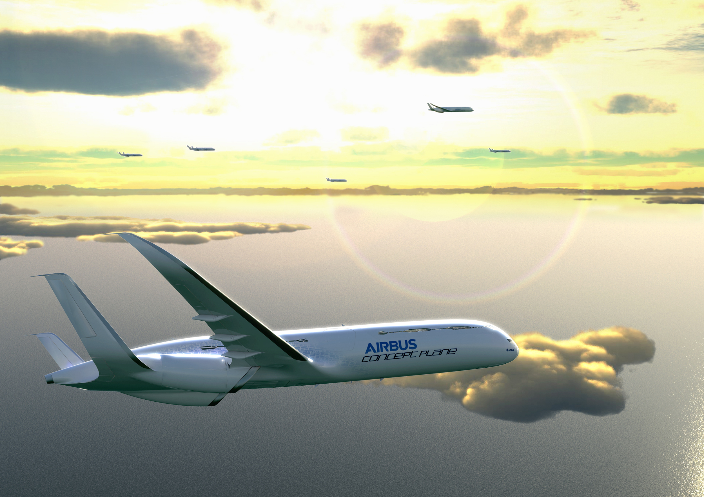

1 使用数据
1.1 风分量
功能
飞机燃油系统确保飞机在正常运转以及整个正常飞行包线内，连续地向发动机和APU提供最小压力为TVP+5磅/平方英寸的燃油，同时燃油系统也有足够的冗余功能，保证飞机由于燃油系统失效而导致灾难性事件的机率大大减小。
1.2 QNH-压力高度转换
燃油箱中的蒸汽是易爆的，有毒的。进入油箱前，应放掉油箱中燃油，并将燃油蒸汽降低到安全水平。需要进行油箱清洗并执行油箱进入程序以除去燃油蒸汽。油箱中的火花可以引发爆炸。在油箱内部时，必须执行这些操作以防止出现火花。
功能描述
放沉淀阀位于机翼油箱和通气油箱的低点。因此，燃油可以通过放沉淀阀外壳体的延长孔中流出。由于孔的低点低于下翼面，燃油可以完全放出。应当在压力加油操作前后采集燃油样本。燃油中含有大量的水表明可能是引射泵故障。寒冷的天气可以冻结油箱中的水，使放沉淀阀不能打开。
每个油箱通过各自独立的通气管路进行通气，这些通气管与位于油箱外部17＃肋和19＃肋之间的通气箱相连。主通气管路用于油箱内侧部分的通气，该管路从机翼油箱中央翼部分起一直连通到通气箱。该通气管在靠近中央翼处分为两路，两个分支分别在1＃肋的内侧和外侧。
这两个分支开口处的导管直径小于主通气管直径，以此防止某些能通过分支管的杂质堵住主通气管。油箱外侧部分的通气是通过安装在17＃肋肋板上的通气浮子阀来实现的。当该处油面高过通气浮子阀的通气管时，该阀门将关闭，以防止燃油的溢出。通气系统的设计应保证在所有正常的飞行状态下至少有一处通气口是保持畅通的，保证油箱始终通气。
通气箱与外界大气相通，并可存储少量燃油。从通气管路溢出的燃油可通过通气箱排到机外。NACA通气口安装在机翼下翼面的维护口盖上。该通气口位于飞机雷击3区。NACA通气口可使油箱内的气体向内或向外自由流动。
1.3 MATCH-CAS转换
系统组成
飞机燃油系统包括贮存、分配和指示部分

测试数据动态原理图
指示
- 燃油量指示系统
- 磁性油尺
- 燃油压力指示系统
- 燃油温度指示系统
分配
- 加/放油系统
- 发动机供油系统
- APU供油系统
贮存
- 燃油箱
- 油箱通气系统
燃油箱的位置
建议
为延长发动机寿命，建议最大限度地减小推力。然而为提高起飞性能，可选择一个较小的灵活温度以增加推力。重量一定时，可使用同一起飞图表：
- 选择小于最大温度的温度，并保持按最大气温所确定的速度值;
- 或当保持在相同的形态范围内并且在较低的温度中查找相同起飞重量，移向起飞图表的左侧(顺风)。这样会得出一个较低的灵活温度以及，在通常情况下，较低的起飞速度（V1/VR/V2）。
使用以上两种可能性中的一种，检查选择的温度大于实际温度(OAT)和平额定温度(TREF)。
1.4 CAS-TAS转换
| 缩略语 | 英文 | 中文 |
|---|---|---|
| AC | Alternating Current | 交流（电） |
| APU | Auxiliary Power Unit | 辅助动力装置 |
| ATA | Air Transport Association | 航空运输协会 |
| DC | Direct Current | 直流（电） |
| DCU | Data Concentrator Unit | 数据集中装置 |
| EICAS | Engine Indication and Crew Alerting System | 发动机指示与机组告警系统 |
| EMI | Elector-Magnetic Interface | 电磁干扰 |
| ESS | Essential | 重要的 |
| FOCU | Fire and Overheat Control Unit | 防火和过热控制装置 |
| FQC | Fuel Quantity Computer | 燃油量计算机 |
| IOC | Input/Output Concentrator | 输入输出集中器 |
| LDU | Lamp Driver Unit | 灯驱动装置 |
| RDI | Refuel-Defuel Indicator | 加/放油指示器 |
| RDP | Refuel-Defuel Pannel | 加/放油指示板 |
| SOV | Shut-Off Valve | 切断阀 |
| XFEED | Crossfeed | 交输 |
1.5 QFE-压力高度转换
每个油箱通过各自独立的通气管路进行通气，这些通气管与位于油箱外部17＃肋和19＃肋之间的通气箱相连。主通气管路用于油箱内侧部分的通气，该管路从机翼油箱中央翼部分起一直连通到通气箱。该通气管在靠近中央翼处分为两路，两个分支分别在1＃肋的内侧和外侧。这两个分支开口处的导管直径小于主通气管直径，以此防止某些能通过分支管的杂质堵住主通气管。油箱外侧部分的通气是通过安装在17＃肋肋板上的通气浮子阀来实现的。当该处油面高过通气浮子阀的通气管时，该阀门将关闭，以防止燃油的溢出。
通气系统的设计应保证在所有正常的飞行状态下至少有一处通气口是保持畅通的，保证油箱始终通气。通气箱与外界大气相通，并可存储少量燃油。从通气管路溢出的燃油可通过通气箱排到机外。NACA通气口安装在机翼下翼面的维护口盖上。该通气口位于飞机雷击3区。NACA通气口可使油箱内的气体向内或向外自由流动。该通气口在飞行过程中可向油箱提供一定的冲压压力。该通气口上安装有火焰抑制器。通气系统的设计可以保证飞机在所有飞行和地面（包括压力加油和放油）状态下保持油箱内的压力在安全范围内。即使在压力加油切断阀故障状态下，通气系统也可以保证油箱内的压力在安全范围内。机翼上所有肋的顶部都是畅通的，以保证翼盒之间的空气流通。
1.6 压力高度-几何高度转换

1.7 国际标准大气
每个油箱通过各自独立的通气管路进行通气，这些通气管与位于油箱外部17＃肋和19＃肋之间的通气箱相连。主通气管路用于油箱内侧部分的通气，该管路从机翼油箱中央翼部分起一直连通到通气箱。该通气管在靠近中央翼处分为两路，两个分支分别在1＃肋的内侧和外侧。
这两个分支开口处的导管直径小于主通气管直径，以此防止某些能通过分支管的杂质堵住主通气管。油箱外侧部分的通气是通过安装在17＃肋肋板上的通气浮子阀来实现的。当该处油面高过通气浮子阀的通气管时，该阀门将关闭，以防止燃油的溢出。通气系统的设计应保证在所有正常的飞行状态下至少有一处通气口是保持畅通的，保证油箱始终通气。
通气箱与外界大气相通，并可存储少量燃油。从通气管路溢出的燃油可通过通气箱排到机外。NACA通气口安装在机翼下翼面的维护口盖上。该通气口位于飞机雷击3区。NACA通气口可使油箱内的气体向内或向外自由流动。该通气口在飞行过程中可向油箱提供一定的冲压压力。该通气口上安装有火焰抑制器。通气系统的设计可以保证飞机在所有飞行和地面（包括压力加油和放油）状态下保持油箱内的压力在安全范围内。即使在压力加油切断阀故障状态下，通气系统也可以保证油箱内的压力在安全范围内。机翼上所有肋的顶部都是畅通的，以保证翼盒之间的空气流通。